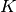
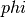

4.2. Preprocessing data¶
The sklearn.preprocessing package provides several common utility functions and transformer classes to change raw feature vectors into a representation that is more suitable for the downstream estimators.
4.2.1. Standardization, or mean removal and variance scaling¶
Standardization of datasets is a common requirement for many machine learning estimators implemented in the scikit: they might behave badly if the individual feature do not more or less look like standard normally distributed data: Gaussian with zero mean and unit variance.
In practice we often ignore the shape of the distribution and just transform the data to center it by removing the mean value of each feature, then scale it by dividing non-constant features by their standard deviation.
For instance, many elements used in the objective function of a learning algorithm (such as the RBF kernel of Support Vector Machines or the l1 and l2 regularizers of linear models) assume that all features are centered around zero and have variance in the same order. If a feature has a variance that is orders of magnitude larger that others, it might dominate the objective function and make the estimator unable to learn from other features correctly as expected.
The function scale provides a quick and easy way to perform this operation on a single array-like dataset:
>>> from sklearn import preprocessing
>>> import numpy as np
>>> X = np.array([[ 1., -1., 2.],
... [ 2., 0., 0.],
... [ 0., 1., -1.]])
>>> X_scaled = preprocessing.scale(X)
>>> X_scaled
array([[ 0. ..., -1.22..., 1.33...],
[ 1.22..., 0. ..., -0.26...],
[-1.22..., 1.22..., -1.06...]])
Scaled data has zero mean and unit variance:
>>> X_scaled.mean(axis=0)
array([ 0., 0., 0.])
>>> X_scaled.std(axis=0)
array([ 1., 1., 1.])
The preprocessing module further provides a utility class StandardScaler that implements the Transformer API to compute the mean and standard deviation on a training set so as to be able to later reapply the same transformation on the testing set. This class is hence suitable for use in the early steps of a sklearn.pipeline.Pipeline:
>>> scaler = preprocessing.StandardScaler().fit(X)
>>> scaler
StandardScaler(copy=True, with_mean=True, with_std=True)
>>> scaler.mean_
array([ 1. ..., 0. ..., 0.33...])
>>> scaler.std_
array([ 0.81..., 0.81..., 1.24...])
>>> scaler.transform(X)
array([[ 0. ..., -1.22..., 1.33...],
[ 1.22..., 0. ..., -0.26...],
[-1.22..., 1.22..., -1.06...]])
The scaler instance can then be used on new data to transform it the same way it did on the training set:
>>> scaler.transform([[-1., 1., 0.]])
array([[-2.44..., 1.22..., -0.26...]])
It is possible to disable either centering or scaling by either passing with_mean=False or with_std=False to the constructor of StandardScaler.
4.2.1.1. Scaling features to a range¶
An alternative standardization is scaling features to lie between a given minimum and maximum value, often between zero and one. This can be achieved using MinMaxScaler.
The motivation to use this scaling include robustness to very small standard deviations of features and preserving zero entries in sparse data.
Here is an example to scale a toy data matrix to the [0, 1] range:
>>> X_train = np.array([[ 1., -1., 2.],
... [ 2., 0., 0.],
... [ 0., 1., -1.]])
...
>>> min_max_scaler = preprocessing.MinMaxScaler()
>>> X_train_minmax = min_max_scaler.fit_transform(X_train)
>>> X_train_minmax
array([[ 0.5 , 0. , 1. ],
[ 1. , 0.5 , 0.33333333],
[ 0. , 1. , 0. ]])
The same instance of the transformer can then be applied to some new test data unseen during the fit call: the same scaling and shifting operations will be applied to be consistent with the transformation performed on the train data:
>>> X_test = np.array([[ -3., -1., 4.]])
>>> X_test_minmax = min_max_scaler.transform(X_test)
>>> X_test_minmax
array([[-1.5 , 0. , 1.66666667]])
It is possible to introspect the scaler attributes to find about the exact nature of the transformation learned on the training data:
>>> min_max_scaler.scale_
array([ 0.5 , 0.5 , 0.33...])
>>> min_max_scaler.min_
array([ 0. , 0.5 , 0.33...])
If MinMaxScaler is given an explicit feature_range=(min, max) the full formula is:
X_std = (X - X.min(axis=0)) / (X.max(axis=0) - X.min(axis=0))
X_scaled = X_std / (max - min) + min
References:
Further discussion on the importance of centering and scaling data is available on this FAQ: Should I normalize/standardize/rescale the data?
Scaling vs Whitening
It is sometimes not enough to center and scale the features independently, since a downstream model can further make some assumption on the linear independence of the features.
To address this issue you can use sklearn.decomposition.PCA or sklearn.decomposition.RandomizedPCA with whiten=True to further remove the linear correlation across features.
Sparse input
scale and StandardScaler accept scipy.sparse matrices as input only when with_mean=False is explicitly passed to the constructor. Otherwise a ValueError will be raised as silently centering would break the sparsity and would often crash the execution by allocating excessive amounts of memory unintentionally.
If the centered data is expected to be small enough, explicitly convert the input to an array using the toarray method of sparse matrices instead.
For sparse input the data is converted to the Compressed Sparse Rows representation (see scipy.sparse.csr_matrix). To avoid unnecessary memory copies, it is recommended to choose the CSR representation upstream.
Scaling target variables in regression
scale and StandardScaler work out-of-the-box with 1d arrays. This is very useful for scaling the target / response variables used for regression.
4.2.1.2. Centering kernel matrices¶
If you have a kernel matrix of a kernel  that computes a dot product in a feature space defined by function , a KernelCenterer can transform the kernel matrix so that it contains inner products in the feature space defined by followed by removal of the mean in that space.
4.2.2. Normalization¶
Normalization is the process of scaling individual samples to have unit norm. This process can be useful if you plan to use a quadratic form such as the dot-product or any other kernel to quantify the similarity of any pair of samples.
This assumption is the base of the Vector Space Model often used in text classification and clustering contexts.
The function normalize provides a quick and easy way to perform this operation on a single array-like dataset, either using the l1 or l2 norms:
>>> X = [[ 1., -1., 2.],
... [ 2., 0., 0.],
... [ 0., 1., -1.]]
>>> X_normalized = preprocessing.normalize(X, norm='l2')
>>> X_normalized
array([[ 0.40..., -0.40..., 0.81...],
[ 1. ..., 0. ..., 0. ...],
[ 0. ..., 0.70..., -0.70...]])
The preprocessing module further provides a utility class Normalizer that implements the same operation using the Transformer API (even though the fit method is useless in this case: the class is stateless as this operation treats samples independently).
This class is hence suitable for use in the early steps of a sklearn.pipeline.Pipeline:
>>> normalizer = preprocessing.Normalizer().fit(X) # fit does nothing
>>> normalizer
Normalizer(copy=True, norm='l2')
The normalizer instance can then be used on sample vectors as any transformer:
>>> normalizer.transform(X)
array([[ 0.40..., -0.40..., 0.81...],
[ 1. ..., 0. ..., 0. ...],
[ 0. ..., 0.70..., -0.70...]])
>>> normalizer.transform([[-1., 1., 0.]])
array([[-0.70..., 0.70..., 0. ...]])
Sparse input
normalize and Normalizer accept both dense array-like and sparse matrices from scipy.sparse as input.
For sparse input the data is converted to the Compressed Sparse Rows representation (see scipy.sparse.csr_matrix) before being fed to efficient Cython routines. To avoid unnecessary memory copies, it is recommended to choose the CSR representation upstream.
4.2.3. Binarization¶
4.2.3.1. Feature binarization¶
Feature binarization is the process of thresholding numerical features to get boolean values. This can be useful for downstream probabilistic estimators that make assumption that the input data is distributed according to a multi-variate Bernoulli distribution. For instance, this is the case for the sklearn.neural_network.BernoulliRBM.
It is also common among the text processing community to use binary feature values (probably to simplify the probabilistic reasoning) even if normalized counts (a.k.a. term frequencies) or TF-IDF valued features often perform slightly better in practice.
As for the Normalizer, the utility class Binarizer is meant to be used in the early stages of sklearn.pipeline.Pipeline. The fit method does nothing as each sample is treated independently of others:
>>> X = [[ 1., -1., 2.],
... [ 2., 0., 0.],
... [ 0., 1., -1.]]
>>> binarizer = preprocessing.Binarizer().fit(X) # fit does nothing
>>> binarizer
Binarizer(copy=True, threshold=0.0)
>>> binarizer.transform(X)
array([[ 1., 0., 1.],
[ 1., 0., 0.],
[ 0., 1., 0.]])
It is possible to adjust the threshold of the binarizer:
>>> binarizer = preprocessing.Binarizer(threshold=1.1)
>>> binarizer.transform(X)
array([[ 0., 0., 1.],
[ 1., 0., 0.],
[ 0., 0., 0.]])
As for the StandardScaler and Normalizer classes, the preprocessing module provides a companion function binarize to be used when the transformer API is not necessary.
Sparse input
binarize and Binarizer accept both dense array-like and sparse matrices from scipy.sparse as input.
For sparse input the data is converted to the Compressed Sparse Rows representation (see scipy.sparse.csr_matrix). To avoid unnecessary memory copies, it is recommended to choose the CSR representation upstream.
4.2.4. Encoding categorical features¶
Often features are not given as continuous values but categorical. For example a person could have features ["male", "female"], ["from Europe", "from US", "from Asia"], ["uses Firefox", "uses Chrome", "uses Safari", "uses Internet Explorer"]. Such features can be efficiently coded as integers, for instance ["male", "from US", "uses Internet Explorer"] could be expressed as [0, 1, 3] while ["female", "from Asia", "uses Chrome"] would be [1, 2, 1].
Such integer representation can not be used directly with scikit-learn estimators, as these expect continuous input, and would interpret the categories as being ordered, which is often not desired (i.e. the set of browsers was ordered arbitrarily).
One possibility to convert categorical features to features that can be used with scikit-learn estimators is to use a one-of-K or one-hot encoding, which is implemented in OneHotEncoder. This estimator transforms each categorical feature with m possible values into m binary features, with only one active.
Continuing the example above:
>>> enc = preprocessing.OneHotEncoder()
>>> enc.fit([[0, 0, 3], [1, 1, 0], [0, 2, 1], [1, 0, 2]])
OneHotEncoder(categorical_features='all', dtype=<... 'float'>,
n_values='auto', sparse=True)
>>> enc.transform([[0, 1, 3]]).toarray()
array([[ 1., 0., 0., 1., 0., 0., 0., 0., 1.]])
By default, how many values each feature can take is inferred automatically from the dataset. It is possible to specify this explicitly using the parameter n_values. There are two genders, three possible continents and four web browsers in our dataset. Then we fit the estimator, and transform a data point. In the result, the first two numbers encode the gender, the next set of three numbers the continent and the last four the web browser.
See Loading features from dicts for categorical features that are represented as a dict, not as integers.
4.2.5. Label preprocessing¶
4.2.5.1. Label binarization¶
LabelBinarizer is a utility class to help create a label indicator matrix from a list of multi-class labels:
>>> lb = preprocessing.LabelBinarizer()
>>> lb.fit([1, 2, 6, 4, 2])
LabelBinarizer(neg_label=0, pos_label=1)
>>> lb.classes_
array([1, 2, 4, 6])
>>> lb.transform([1, 6])
array([[1, 0, 0, 0],
[0, 0, 0, 1]])
LabelBinarizer also supports multiple labels per instance:
>>> lb.fit_transform([(1, 2), (3,)])
array([[1, 1, 0],
[0, 0, 1]])
>>> lb.classes_
array([1, 2, 3])
4.2.5.2. Label encoding¶
LabelEncoder is a utility class to help normalize labels such that they contain only values between 0 and n_classes-1. This is sometimes useful for writing efficient Cython routines. LabelEncoder can be used as follows:
>>> from sklearn import preprocessing
>>> le = preprocessing.LabelEncoder()
>>> le.fit([1, 2, 2, 6])
LabelEncoder()
>>> le.classes_
array([1, 2, 6])
>>> le.transform([1, 1, 2, 6])
array([0, 0, 1, 2])
>>> le.inverse_transform([0, 0, 1, 2])
array([1, 1, 2, 6])
It can also be used to transform non-numerical labels (as long as they are hashable and comparable) to numerical labels:
>>> le = preprocessing.LabelEncoder()
>>> le.fit(["paris", "paris", "tokyo", "amsterdam"])
LabelEncoder()
>>> list(le.classes_)
['amsterdam', 'paris', 'tokyo']
>>> le.transform(["tokyo", "tokyo", "paris"])
array([2, 2, 1])
>>> list(le.inverse_transform([2, 2, 1]))
['tokyo', 'tokyo', 'paris']
4.2.6. Imputation of missing values¶
For various reasons, many real world datasets contain missing values, often encoded as blanks, NaNs or other placeholders. Such datasets however are incompatible with scikit-learn estimators which assume that all values in an array are numerical, and that all have and hold meaning. A basic strategy to use incomplete datasets is to discard entire rows and/or columns containing missing values. However, this comes at the price of losing data which may be valuable (even though incomplete). A better strategy is to impute the missing values, i.e., to infer them from the known part of the data.
The Imputer class provides basic strategies for imputing missing values, either using the mean, the median or the most frequent value of the row or column in which the missing values are located. This class also allows for different missing values encodings.
The following snippet demonstrates how to replace missing values, encoded as np.nan, using the mean value of the columns (axis 0) that contain the missing values:
>>> import numpy as np
>>> from sklearn.preprocessing import Imputer
>>> imp = Imputer(missing_values='NaN', strategy='mean', axis=0)
>>> imp.fit([[1, 2], [np.nan, 3], [7, 6]])
Imputer(axis=0, copy=True, missing_values='NaN', strategy='mean', verbose=0)
>>> X = [[np.nan, 2], [6, np.nan], [7, 6]]
>>> print(imp.transform(X))
[[ 4. 2. ]
[ 6. 3.666...]
[ 7. 6. ]]
The Imputer class also supports sparse matrices:
>>> import scipy.sparse as sp
>>> X = sp.csc_matrix([[1, 2], [0, 3], [7, 6]])
>>> imp = Imputer(missing_values=0, strategy='mean', axis=0)
>>> imp.fit(X)
Imputer(axis=0, copy=True, missing_values=0, strategy='mean', verbose=0)
>>> X_test = sp.csc_matrix([[0, 2], [6, 0], [7, 6]])
>>> print(imp.transform(X_test))
[[ 4. 2. ]
[ 6. 3.666...]
[ 7. 6. ]]
Note that, here, missing values are encoded by 0 and are thus implicitly stored in the matrix. This format is thus suitable when there are many more missing values than observed values.
Imputer can be used in a Pipeline as a way to build a composite estimator that supports imputation. See Imputing missing values before building an estimator